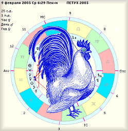

Очередное празднование 4702-го Нового Года начнётся в Пекине в час Крысы (23:00) 9 февраля 2005 года. Новолуние, с которого берёт отсчёт лунный китайский календарь, произойдёт 9.02.2005 в 00:28. Это 22-й год в текущем 60-летнем цикле и принадлежит он Деревянному Синему (Зелёному) Петуху (Курице). Путаницы с цветами нет - в китайской системе синий и зелёный цвета неразделимы. Стихия Дерева соотносится с восточным направлением, планетой Юпитер и четвергом. Основные свойства Дерева – рост, жизненность, плодовитость, преемственность. Их всех элементов Дерево наиболее одушевлённый и живой элемент. Лучшие качества года Петуха (Курицы) – предприимчивость и воодушевлённость, трудолюбие и работоспособность, открытость и целеустремлённость, смелость и решительность. Отрицательные качества – прямолинейность вплоть до грубости, шумливость и хвастливость, неиссякаемое желание всех переубедить.
 Ассоциативный ряд, стоящий за петухом и курицей чрезвычайно разнообразен и любопытен. Петух символизирует Перуна у славян и Тора у германцев и связывается с огнём и молниями, отсюда корни выражения «пустить красного петуха».Фигура петуха часто служила указателем ветра - флюгером, украшая шпили средневековых зданий, толи, по мнению лютеран, напоминая о предательстве Петра, толи, напоминая о том, что "церковь Божия бдит над душами верующих» по словам одного из Римских Пап. Петух, особенно чёрного цвета, необходимый элемент некоторых магических обрядов, в этом смысле петухам часто не везло – приходилось играть неблагодарную роль жертвы. Слово «петух» в русском языке происходит от глагола «петь»,исстари петуха почитали как солнечную птицу, «глашатая Солнца». Для самых любопытных будет интересно узнать, что петух это не только символ Франции, но и города Риги и в этом смысле рижане немного парижане, помня присказку «у нас как в Париже, только грязь чуть пожиже». О петухе Плиний писал: «Природа создала его для того, чтобы он пробуждал людей на труд», о нём австралийские аборигены говорят как о «птице, которая смеётся», именно с курицей древние арабы ассоциировали нынешнее созвездие Лебедя, «она превращает траву в банкноты, из песка чеканит серебро, а из зерна – золото», – так говорят о курице фермеры. И Петух, и Курица давно и навечно вошли в фольклор многих народов мира.
Число 7, нумерологический корень 2005-го года, согласно Пифагору отождествлялось с радостью, любовью и благоприятными возможностями, сейчас наиболее счастливым это число признаётся в Азии. Это 7 нот, 7 дней недели, 7 правящих планет, 7 чакр. В более развёрнутом смысле 7-ка имеет отношение к искусствам, талантам, символизирует тайны, а также изучение всего неизвестного и невидимого.
Любопытные сведения даёт анализ предыдущих годов Синего Деревянного Петуха. 1945 год: весеннее широкомасштабное наступление советских войск в Европе, свадьба и самоубийство новобрачных Гитлера и Браун, взятие Берлина и капитуляция Германии. В августе США сбрасывают атомные бомбы на Хиросиму и Нагасаки, СССР наступает на Японию, Япония капитулирует, 2 мировая война окончена. Осенью образована ООН и начат суд в Нюрнберге. Коммунисты Вьетнама под руководством Хо Ши Мина объявляют независимость, начав войну против японских захватчиков и французских колониалистов. 1885 год: Высылка 26 тысяч поляков из германской части Польши, окончание 2-летней франко-китайской войны и заключение мирного договора, по которому Франция устанавливает свой протекторат над Вьетнамом, чуть позже Франция объявит протекторат и над Мадагаскаром. По занавес года Великобритании удаётся оттяпать себе Бирму. Радует одно – Луи Пастер открывает вакцину против бешенства. 1825 год: крупное восстание в Индонезии (о. Ява) против голландских колонизаторов, загадочная смерть Александра 1 в Таганроге, присяга и отречение Константина, присяга Николая 1 и восстание декабристов. Из более весёлого -рождение Иоганна Штрауса, автора многочисленных вальсов и оперетт.
Стоит обратить внимание на то, что за последнюю тысячу лет только 1825 год оказался подобен 2005 году не только по элементу и названию года (Синий Петух), но и нумерологически – его числовой корень тоже равен семёрке. Заметим, как живо на цикл Синего Петуха реагирует Вьетнам и Германия.
В политике Деревянный Петух будет на страже интересов консерваторов, наказывая острым клювом заговорщиков и путчистов всех мастей, реакция на беспорядки будет мгновенной. Тем не менее, восстания и бунты будут, а рвётся как всегда там, где тонко – Ирак, Россия, Афганистан, Ближний Восток, страны третьего мира с нестабильными политическими режимами, благодаря последним выборам сюда можно отнести и Украину. В общем случае Петуха приводят в соответствие с Австралией, Ганой, Гаити и Парагваем. В искусстве и экономике будут прогрессировать классические модели, успех придет к проверенным временем направлениям и стилям. Во взаимоотношениях людей возьмут вверх более традиционные взгляды на семью. Отмечу, что 2005 год весьма благоприятен для помолвок и свадеб в целом. Как и в прошлом году, Дерево благоприятствует «ветвлению», т.е. созданию дочерних фирм, продолжению старых дел в несколько видоизменённом состоянии, раскрытию резервов в уже существующих проектах. Что касается новых начинаний, то нужно быть готовым к тому, что в будущем они могут сильно видоизмениться.
Желающим поближе познакомиться с характером Синего Петуха можно посоветовать быть внимательным к окружающим событиям в дни, когда транзитные планеты будут пересекать на эклиптике звезду Денеб, главную звезду созвездия Лебедя – арабской Курицы:
в начале февраля 2005 Уран
23-24.03 Солнце
2-3.02 Венера
8-9.05 Марс
Логика взаимоотношений китайских элементов подсказывает, что встречать год лучше в сине-зелёных цветах, окружив себя деревянными фигурками кур и петухов. Желательно исключить из праздничного стола курятину – Петух не поймёт юмора, полезно добавить блюда из злаков и чего-нибудь кисленького для хозяина Дерева Юпитера. Для женщин подойдут подарки, связанные с земной стихией – керамика, статуэтки, обычные цветы, для мужчин пойдут подарки, связанные с воздушной стихией, в диапазоне от роскошного авторского бумажного самолётика до скромного спортивного. Логика взаимоотношений китайских элементов подсказывает, что встречать год лучше в сине-зелёных цветах, окружив себя деревянными фигурками кур и петухов. Желательно исключить из праздничного стола курятину – Петух не поймёт юмора, полезно добавить блюда из злаков и чего-нибудь кисленького для хозяина Дерева Юпитера. Для женщин подойдут подарки, связанные с земной стихией – керамика, статуэтки, обычные цветы, для мужчин пойдут подарки, связанные с воздушной стихией, в диапазоне от роскошного авторского бумажного самолётика до скромного спортивного.
|
КРЫСА |
1912 1924 1936 1948 1960 1972 1984 1996 |
Проявит свои лучшие качества – проворство и решительность, будет сновать с деловым видом. Её успех лежит в службе и спорте, сможет реализовать лидерские качества, однако материальная отдача будет весьма скромной. Степень везучести выше у 1936 и 1996 года, на втором месте 1960 год, труднее 1948 году, для остальных поправок нет. |
|
БЫК |
1913 1925 1937 1949 1961 1973 1985 1997 |
Хороший год, сочное пастбище. Бык отведёт душу, занявшись любимыми делами, будет вести себя очень самостоятельно и уверенно. В политике займёт максимально выгодные позиции. Степень везучести выше у 1937 и 1997 года, на втором месте 1961 год, чуть труднее 1949 году, для остальных поправок нет. |
|
ТИГР |
1914 1926 1938 1950 1962 1974 1986 1998 |
Трудный год. Вероятны неожиданные преграды, разногласия с друзьями. Удача у Тигров, любящих уединение. Благоприятно для раскрытия творческих, изобретательских способностей. Степень везучести выше у 1926 и 1986 года, на втором месте 1950 год, трудно 1938 и 1998 году, для остальных поправок нет. |
|
КОТ(КРОЛИК) |
1915 1927 1939 1951 1963 1975 1987 1999 |
Кролик выглядит встревожено, забывая о том, что морковка зажата в лапе ещё с прошлого года. В делах, действительно, прогресс трудно различим, зато в личной жизни он даст простор основному кроличьему инстинкту. Степень везучести выше у 1927 и 1987 года, на втором месте 1951 год, трудно 1939 и 1999 году, для остальных поправок нет. |
|
ДРАКОН |
1916 1928 1940 1952 1964 1976 1988 2000 |
Год с небольшим положительным балансом. Успех непостоянный, по синусоиде, это касается и личной и деловой жизни. В любом случае шансы заявить о себе Дракону предоставятся обязательно. Степень везучести выше у 1916 и 1976 года, на втором месте 1940 и 2000 год, труднее 1928 и 1988 году, для остальных поправок нет. |
|
ЗМЕЯ |
1917 1929 1941 1953 1965 1977 1989 2001 |
Год с небольшим отрицательным балансом. Потери из-за рассеянности, многое будет видеться искажённо, словно в кривом зеркале. Сохранить свои позиции удастся самым внимательным и наблюдательным Змеям. Степень везучести выше у 1917 и 1977 года, на втором месте 1941 и 2001 год, труднее 1929 и 1989 году, для остальных поправок нет. |
|
ЛОШАДЬ |
1918 1930 1942 1954 1966 1978 1990 2002 |
Хороший год. Мустанг радостно вырвется на свободу в табун таких жедрузей и подруг. Будут сообразительны и склонны к рассуждениям, что положительно скажется на работе и благосклонно примется противоположным полом. Степень везучести выше у 1966 года, на втором месте 1930 и 1990 год, чуть труднее 1918 и 1978 году, для остальных поправок нет. |
|
КОЗА |
1919 1931 1943 1955 1967 1979 1991 2003 |
Нейтральный год и вот почему: несмотря на общую тенденцию к преградам и препятствиям, Козы получат в этом году шанс наладить личную жизнь или достичь успеха в искусстве. В любом случае они заслужат похвалы за терпение и дипломатичность. Степень везучести выше у 1967 года, на втором месте 1931 и 1991 год, труднее 1919 и 1979 году, для остальных поправок нет. |
|
ОБЕЗЬЯНА |
1920 1932 1944 1956 1968 1980 1992 2004 |
Не лучший год. На проделки Обезьяны Петух реагирует натянуто, её время уходит, тем не менее она привлечёт к себе внимание, героически преодолевая преграды на работе и в личной жизни. Степень везучести выше у 1956 года, на втором месте 1920 и 1980 год, труднее 1968 году, для остальных поправок нет. |
|
ПЕТУХ(КУРИЦА) |
1921 1933 1945 1957 1969 1981 1993 2005 |
Отличный год. Разбудят многих людей как талантливые организаторы, будут словно мостик помогать людям находить друг друга. Расширят своё влияние в обществе, наладят личные взаимоотношения. Степень везучести выше у 1957 года, на втором месте 1921 и 1981 год, труднее 1969 году, для остальных поправок нет. |
|
СОБАКА |
1922 1934 1946 1958 1970 1982 1994 2006 |
Год с небольшим отрицательным балансом. Собака не любит шумного Петуха, да и порядок она любит наводить по-своему. Успех у тех, кто пойдёт на компромиссы и не станет поднимать лай по любому поводу. Степень везучести выше у 1946 года, на втором месте 1970 год, труднее 1958 году, для остальных поправок нет. |
|
СВИНЬЯ(КАБАН) |
1923 1935 1947 1959 1971 1983 1995 2007 |
Хороший год. Кабан довольно похрюкивает, а отчего волноваться, когда и на работе и в любви расцветают развесистые жёлуди? Степень везучести выше у 1947 года, на втором месте 1971 год, чуть труднее 1959 году, для остальных поправок нет. |
Руслан Суси, январь 2005